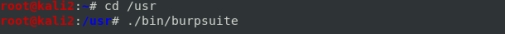

PATH
PATH variable is formatted like this:
[location]:…:
[location]Every time we type the name of a bash command, bash look for a correspondence in each of these locations for executable files
If a program is not in the locations of PATH:
• specify the entire
absolute path:
• specify the
relative path:
◇ from the current directory from where we are, specify the
remaining path putting a doth in front of it:
 ◇ come back from the current directory and specify the
remaining path: